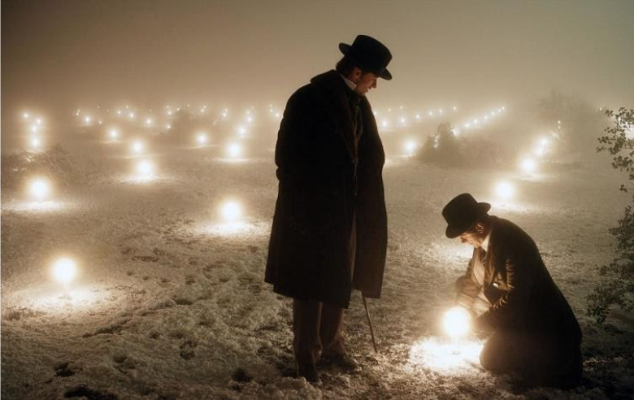

The Prestige :-
Wireless electricity is a 100-year-old dream that just might turn into reality in the coming years. The concept of wireless power transmission began in the last decades of the 19th century,
where Nikola Tesla was the first to propose and work on wireless power transmission. Where he transmitted 100 million volts of high-frequency Wireless Electricity through a coiled magnetic field, over a distance of 26 miles at which he lit up a bank of 200 light bulbs and ran one electric motor to power wireless devices and he also claimed only 5% of the electrical energy was lost in the process. Nikola Tesla has developed the Tesla Coil, a unique device that works by electric resonance and is capable of transmitting electricity without wires.

The above image depicts the experiment conducted by Tesla which was filmed in the movie The Prestige (2006).
However, the coil could conduct electricity wirelessly only over short distances, and due to its limited potential, it did not prove to be a practical application for the wireless transmission of electricity. Nikola Tesla may have died in 1943 with his unfinished dream of wireless electricity transmission. but over the past 100 years, a series of experiments and studies have shown that a genius inventor could be on the right track with his approach.
And in recent years, various research and development in the field of wireless power transmission have been carried out. These experiments resulted in various wireless chargers for mobile devices, EVs, etc.